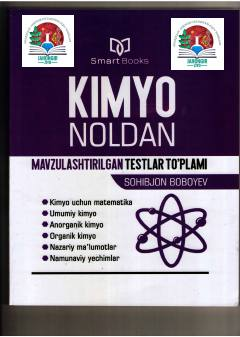

KNKimyo fanini noldan o'rganish uchun mavzulashtirilgan testlar va namunaviy yechimlar to'plami.
Mazkur kitob kimyo fanini noldan boshlab o'rganayotgan abituriyentlar uchun mo'ljallangan mavzulashtirilgan testlar to'plamidir. Unda kimyo uchun matematika, umumiy kimyo, anorganik va organik kimyo bo'limlari bo'yicha nazariy ma'lumotlar hamda namunaviy yechimlar berilgan. Testlar osondan murakkabga qarab tartiblanib, o'quvchilarning bilimini bosqichma-bosqich mustahkamlashga yordam beradi.